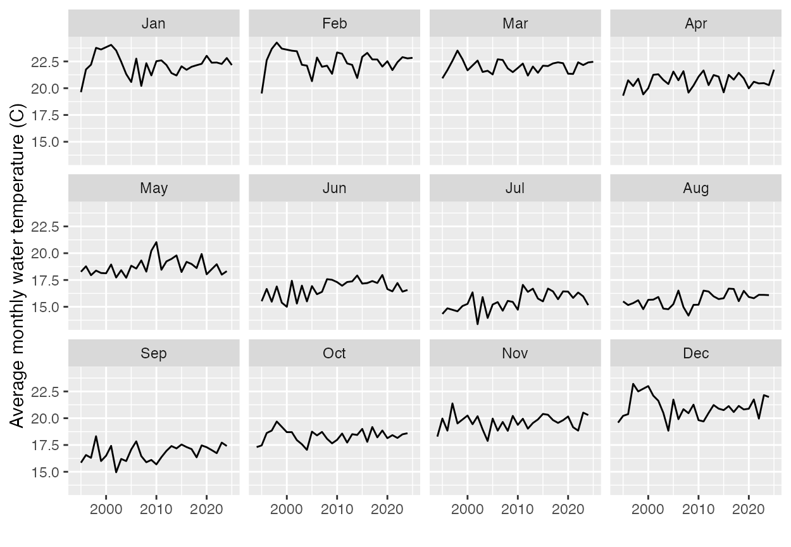

library(tidyverse)
library(rio)HW 2: R practice
Due Sunday, September 29th at 11:59pm
Instructions
This assignment is to be submitted as a PDF file into Canvas. All questions are worth 5 points each, or as marked. The preferred option is to render this Quarto document to PDF and submit that file. This file is set up to render to PDF by default. If you have trouble with that, you can also render to HTML and print to PDF from your browser.
You will fill in the blanks (indicated by ______) in the code chunks below. You will also need to write some code from scratch in a few places. Once you’re done filling in the blanks, you should be able to run all the code chunks without errors. To make the code chunks run, you will need to change the eval option from false to true in the execute options at the top of the document.
You should install any required packages on your own. If you run into trouble, please reach out to me for help. You should do this outside this document, so the code for installing packages is not included here (You should never include code for installing packages in a Quarto document).
The following dataset provides water quality measurements from various beaches in Sydney, Australia for the period Sept 1991 to April, 2025.
water_quality = rio::import('https://raw.githubusercontent.com/rfordatascience/tidytuesday/main/data/2025/2025-05-20/water_quality.csv')Data dictionary
| variable | class | description |
|---|---|---|
| region | character | Area of Sydney City |
| council | character | City council responsible for water quality |
| swim_site | character | Name of beach/swimming location |
| date | date | Date |
| time | time | Time of day |
| enterococci_cfu_100ml | integer | Enterococci bacteria levels in colony forming units (CFU) per 100 millilitres of water |
| water_temperature_c | integer | Water temperature in degrees Celsius |
| conductivity_ms_cm | integer | Conductivity in microsiemens per centimetre |
| latitude | double | Latitude |
| longitude | double | Longitude |
We will start exploring this dataset using R.
Structure of the dataset
1a. How many rows and columns are in the dataset? (5)
____ (water_quality)1b. What are the variable names in the dataset? (5)
____(water_quality)1c. What are the data types of each variable? (5)
You can use the glimpse function from the dplyr package to get a quick overview of the data types of each variable. The dplyr package is part of the tidyverse collection of packages, which we loaded at the start of this assignment.
< Your code here >Data munging (cleaning and transforming the data)
2a. Are there any missing values in the dataset? If so, which variables have missing values and how many? (5)
Hint: The
is.nafunction returns aTRUEif a value is missing (NA) andFALSEotherwise. In R,TRUEandFALSEare treated as 1 and 0 respectively, so you can use thesumfunction to count the number of missing values in a variable.
Choose one variable in the dataset and find the number of missing values it has
sum(is.na(______$_____))You can use the
summarisefunction from the dplyr package to count the number of missing values in each variable in the dataset. Theacrossfunction allows you to apply a function to multiple columns at once.You will also need to create an anonymous function with one argument (the variable name) that returns the sum of missing values in that variable. The formal way to do this is
\(x) sum(is.na(x)).
water_quality |>
summarise(across(everything(), \(x) sum(is.na(x)))) region council swim_site date time enterococci_cfu_100ml water_temperature_c
1 0 0 0 0 11192 307 75039
conductivity_ms_cm latitude longitude
1 78536 0 0Read the documentation for summarise and across to understand how they work. You can access the documentation by running ?summarise and ?across in your R console.
2b. Create a new variable called log_enterococci that is the natural logarithm of the enterococci_cfu_100ml variable. (5)
water_quality <- water_quality |>
______(log_enterococci = log(enterococci_cfu_100ml + 1)) # to avoid the log(0) situation2c. Create a new variable called month that is the month of the year extracted from the date variable. We want a textual representation of the month (e.g., “January”, “February”, etc.) (5)
See the documentation for
lubridate::monthfor how to do this. You will need to change one of the default options in thelubridate::monthfunction. The lubridate package is part of the tidyverse collection of packages, so you don’t need to load it separately.
< Your code here >2d. The maximum value of the recorded water temperature is 1040, which seems unreasonably high. The question is, are measurements at particular beaches being done poorly. Extract observations where the water temperature is above 35 degrees Celsius, and then create a frequency table of the beaches in this filtered dataset (5)
You can use the
filterfunction from the dplyr package to filter the dataset, and then use thecountfunction to create a frequency table of theswim_sitevariable in the filtered dataset.
2e. Were the high temperature readings more common in particular years? (5)
< Your code here >Data summaries
3a. How many unique swim sites are in each region? (5)
Overall, there are 79 unique swim sites in the dataset. Use the group_by and summarise functions from the dplyr package to find the number of unique swim sites in each region. We will use a pipe (|>) to pass the water_quality dataset to the group_by function, and then pass the result to the summarise function.
water_quality |>
group_by(_____) |>
summarise(num_swim_sites = n_distinct(_____))3b. What is the average water temperature in each region per month, after filtering out readings > 35C? (5)
water_quality |>
group_by(_____, _____) |>
summarise(avg_water_temp = mean(_____, na.rm = TRUE)) |>
ungroup() # this is to remove the grouping and make it usable for other operationsExtra credit (10)
Using the water quality data filtered for water temperatures ≤ 35C, recreate the following plot. Even if you can’t code them in R yet, write out what data steps you would need to be able to draw these plots.
This exercise is meant to train you to (a) reverse-engineer graphs, and (b) conceptualize the data munging steps you need to get to these visualization
< Your explanation of the data process here>
< Your code here >